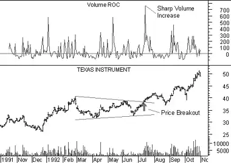

Volume Rate-Of-Change
Overview
The Volume Rate-of-Change ("ROC") is calculated identically to the Price ROC, except it displays the ROC of the security's volume, rather than of its closing price.
Interpretation
Almost every significant chart formation (e.g., tops, bottoms, breakouts, etc) is accompanied by a sharp increase in volume. The Volume ROC shows the speed at which volume is changing.
Additional information on the interpretation of volume trends can be found in the discussions on Volume and on the Volume Oscillator.
Example
The following chart shows Texas Instruments and its 12-day Volume ROC.
 When prices broke out of the triangular pattern, they were accompanied by a sharp increase in volume. The increase in volume confirmed the validity of the price breakout.Calculation
The Volume Rate-Of-Change indicator is calculated by dividing the amount that volume has changed over the last n-periods by the volume n-periods ago. The result is the percentage that the volume has changed in the last n-periods.
If the volume is higher today than n-periods ago, the ROC will be a positive number. If the volume is lower today than n-periods ago, the ROC will be a negative number.